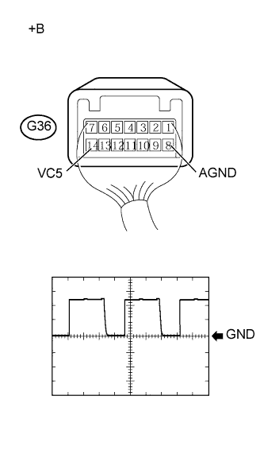

DTC B278A Короткое замыкание на GND в цепи питания системы иммобилайзера |
| Код DTC | Условие обнаружения DTC | Неисправный участок |
| B278A | Короткое замыкание или обрыв в цепи питания выключателя зажигания. |
|
| 1.ПРОВЕРЬТЕ ЖГУТ ПРОВОДОВ И РАЗЪЕМ (ЭБУ СЕРТИФИКАЦИИ – ЗАМОК ЗАЖИГАНИЯ) |
Отсоедините разъем G38 ЭБУ.
Отсоедините разъем выключателя G36.
Измерьте сопротивление в соответствии со значениями, приведенными в таблице ниже.
| Контакты для подключения диагностического прибора | Условие | Заданные условия |
| G38-28 (VC5) - G36-14 (VC5) | Всегда | Менее 1 Ом |
| G38-36 (AGND) - G36-8 (AGND) | ||
| G38-28 (VC5) или G36-14 (VC5) - масса | Всегда | 10 кОм или более |
| G38-36 (AGND) или G36-8 (AGND) - масса |
|
| ||||
| OK | |
| 2.ПРОВЕРЬТЕ ЭБУ СЕРТИФИКАЦИИ |
|  |
С помощью осциллографа проверьте форму сигнала.
| Расположение | Описание |
| Контакты для подключения диагностического прибора | G36-14 (VC5) - G36-8 (AGND) |
| Настройки прибора | 2 В / дел., 20 мс/ дел. |
| Условие | Зажигание выключено, ключ находится вне салона, и истекло не более 30 секунд после нажатия выключателя зажигания |
| *a | Устройство с подсоединенным жгутом проводов (выключатель зажигания) |
| Результат | Следующий шаг |
| OK (для моделей с 1GR-FE, с левосторонним рулевым управлением) | А |
| OK (для моделей с 1GR-FE, с правосторонним рулевым управлением) | B |
| OK (для моделей с 1KD-FTV, с левосторонним рулевым управлением) | C |
| OK (для моделей с 1KD-FTV, с правосторонним рулевым управлением) | D |
| NG | E |
|
| ||||
|
| ||||
|
| ||||
|
| ||||
| А | ||
| ||